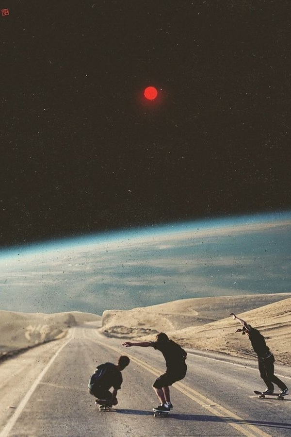

Plate I
Listen
The homepage is a gallery.
Six artworks in motion, printed in dots. Every nine seconds each dot crosses the screen and lands as part of the next artwork.

IThe name
aúra, the gentle breath of wind, light, and morning air.
Music apps have come to resemble one another. Aura began on a blank black page, and it looks like none of them. One glass. Three typefaces. No colour but your music’s own.
Plate I
The homepage is a gallery.
Six artworks in motion, printed in dots. Every nine seconds each dot crosses the screen and lands as part of the next artwork.
Plate II
An instrument.
Where an album has a film, the cover gives way to it, in colour, fading along the arc of the dial beneath it.
Plate III
In their own hand.
A portrait in black and white, and the name set in the artist’s own lettering, where they have one.
Plate IV
Grey glass.
Playlists are folders of frosted glass. The only colour is the covers of the songs rising out of them.
IIIThe sound
Aura prints what the decoder measured and nothing it didn’t. “Bit-perfect” appears only once your phone has confirmed the path. Turn on a tuning and the words take themselves away.
IVThe hand
A dial in place of a progress bar. Its red hand is the one colour Aura owns, and the only colour on this page.
VIThe omissions
For the few who notice.
Edition II · MMXXVI